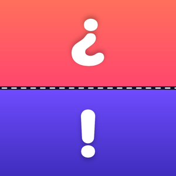

Two Sides: Party Games
One phone. Two sides. Five games.
Support
Purchases missing? Open Settings in the app and tap Restore purchases. Purchases are tied to your Apple Account and shared with your Family Sharing group.
Face-to-face mode: lay the phone flat on the table between two players (or stand a folding phone up like a tent). The top half of the screen is turned around for the player across from you.
Forehead mode: hold the phone on your forehead with the screen facing out. Tilt down for correct, tilt up to pass. You can also tap the right side (correct) or the left side (pass).
Refunds are handled by Apple at reportaproblem.apple.com.
Contact: questions, bugs and deck ideas are welcome on our feedback page.
Destek
Satın aldığın desteler görünmüyor mu? Uygulamada Ayarlar > Satın alımları geri yükle'ye dokun. Satın alımlar Apple Hesabına bağlıdır ve Aile Paylaşımı grubunla paylaşılır.
Karşılıklı mod: telefonu iki oyuncunun arasına masaya düz koy (ya da katlanabilir telefonu çadır gibi dik). Ekranın üst yarısı karşındaki oyuncu için ters çevrilmiştir.
Alın modu: telefonu ekranı dışa bakacak şekilde alnına tut. Doğru için aşağı, pas için yukarı eğ. Sağ tarafa (doğru) ya da sol tarafa (pas) dokunarak da işaretleyebilirsin.
İade talepleri Apple tarafından reportaproblem.apple.com üzerinden yürütülür.
İletişim: soru, hata bildirimi ve deste önerileri için geri bildirim sayfamızı kullanabilirsin.